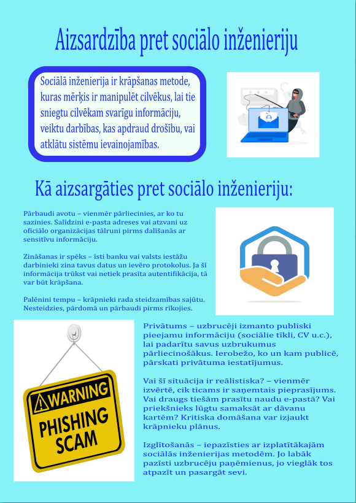

Sociālā inženierija ir krāpšanas metode, kuras mērķis ir manipulēt cilvēkus, lai tie sniegtu cilvēkam svarīgu informāciju, veiktu darbības, kas apdraud drošību, vai atklātu sistēmu ievainojamības. [1] Ir daudzas metodes, kuras izmanto krāpnieki, kā, piemēram, “phishing” un “baiting”, kas stresainā situācija var apdraudēt pat gudrākos cilvēkus, tāpēc ir svarīgi atpazīt krāpniekus un neiekrist viņu slazdā. [2] Kā aizsargāties pret sociālo inženieriju [3]: Pārbaudi avotu – vienmēr pārliecinies, ar ko tu sazinies. Salīdzini e-pasta adreses vai atzvani uz oficiālo organizācijas tālruni pirms dalīšanās ar sensitīvu informāciju. Zināšanas ir spēks – īsti banku vai valsts iestāžu darbinieki zina tavus datus un ievēro protokolus. Ja šī informācija trūkst vai netiek prasīta autentifikācija, tā var būt krāpšana. Palēnini tempu – krāpnieki rada steidzamības sajūtu. Nesteidzies, pārdomā un pārbaudi pirms rīkojies. Privātums – uzbrucēji izmanto publiski pieejamu informāciju (sociālie tīkli, CV u.c.), lai padarītu savus uzbrukumus pārliecinošākus. Ierobežo, ko un kam publicē, pārskati privātuma iestatījumus. Vai šī situācija ir reālistiska? – vienmēr izvērtē, cik ticams ir saņemtais pieprasījums. Vai draugs tiešām prasītu naudu e-pastā? Vai priekšnieks lūgtu samaksāt ar dāvanu kartēm? Kritiska domāšana var izjaukt krāpnieku plānus. Izglītošanās – iepazīsties ar izplatītākajām sociālās inženierijas metodēm. Jo labāk pazīsti uzbrucēju paņēmienus, jo vieglāk tos atpazīt un pasargāt sevi.
